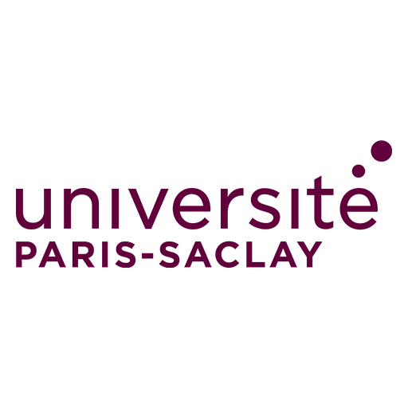
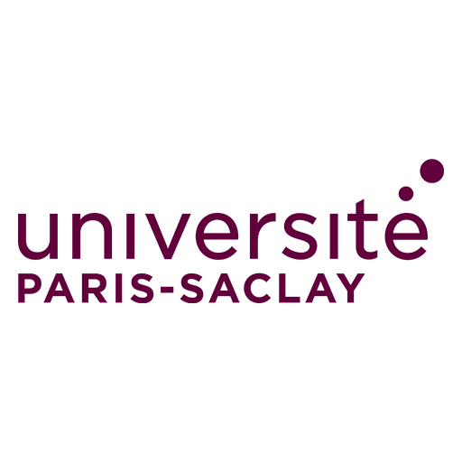

7/8/2024: I have recently graduated fron University of California, Berkeley and am currently in Lille, France. I am observing the natural world, taking note of the how we have intertwined our society to fit within the space as well as how we have dominated the land. Later in July, I will be moving to San Francisco, living with my buddies from school and my hometown in San Diego.
7/10/2024: I will be working in and around the city to get the most wholistic experience. I will be working on projects with respect to data science, artificial intelligence and complex networks over the course of the year learning and improving new skills as well as those I am familiar with. I enjoy spatial intelligence(Geospatial Data Science) where we attempt to draw inference and understanding of the human interaction with space throughout the daily life.
11/18/2024: I have started work as a Research Associate in Data Science at UC Berkeley under supervision of Dr. Albert Ruhi, Dr. Stephanie Carlson and Dr. Robert Fournier. I am researching complex methods for ecosystem modeling within the San Francisco Bay and Delta.
------I am a recent graduate from UC Berkeley who loves to learn by following my passions and question those who are admirable. I am raised by the most loving and supportive parents who, in their own ways tought me how to be respectful, compassionnate, hard working and joyous. I appreciate life as it comes to me, and I work to open up possibilities this world has to offer.
------By keeping my eyes open as I move about places, I am able to take in experiences that help to shape my perspectives. I have been lucky enough to travel to many unique places within the United States and beyond. I am super excited by how we have attempted to integrate our society with the world that we have built upon, some places better than others, but there is always the excitement of the re-integration of the natural world with our built environment. This is a core aspect of my research interests in modeling of the natural world in order to best evaluate how we can return to a semi-harmonious state as soon as possible with as little disruption to the principles that our society has been built upon.
------I get excited about surfing in front of my house, skating to the transit stops, and bussing around the Bay. I have been enjoying living with some of my closest friends, meeting new people, fiding the local spots and shopping at the farmers market promoting healthy cooking using fresh produce from local producers. After graduation, I am learning the ways of the world, finding out where we fit, what we can do, and how we can act. Amidst chaos is beauty.
09/20/2025: Today is a rainy day in the 14th arrondissement of Paris. Auto Complete does not know how to fill in my sentences(arguably an amazing thing because we are human and it is a machine). I am studying Artificial Intelligence amongst a group of world travelers and intellectuals in a time when AI is highly debated and discussed. It is a field of uncertainty and desire and we are hoping to march forward with care for where we step to ensure that we do not tread on the individuals and spaces. It is funny because people have built computing and AI to be "too big to fail" but there is little consideration of the base on which it is built because abstraciton is the name of the game.
I am really excited to complement my "foundational knowledge" of mathematics with the moderm computing principles which is very much driven by these principles, theorems and laws. We see a possible future where AI can improve parts of life that are too complex for us to design under the manpower and timeframe that they are desired.
------ San Francisco is an amazing place and the experiences surrounded by those who taught me to listen and think was spectacular. To those in the supper club, I still think about the meals we prepared, the fufu, the wings, the chili and the beers. To those who I met in a moment, I hope we may all smile about the time we shared. To my darling, bouncing around like magnets in a pinball machine is quite special; whenever we recconect I am so greatful.